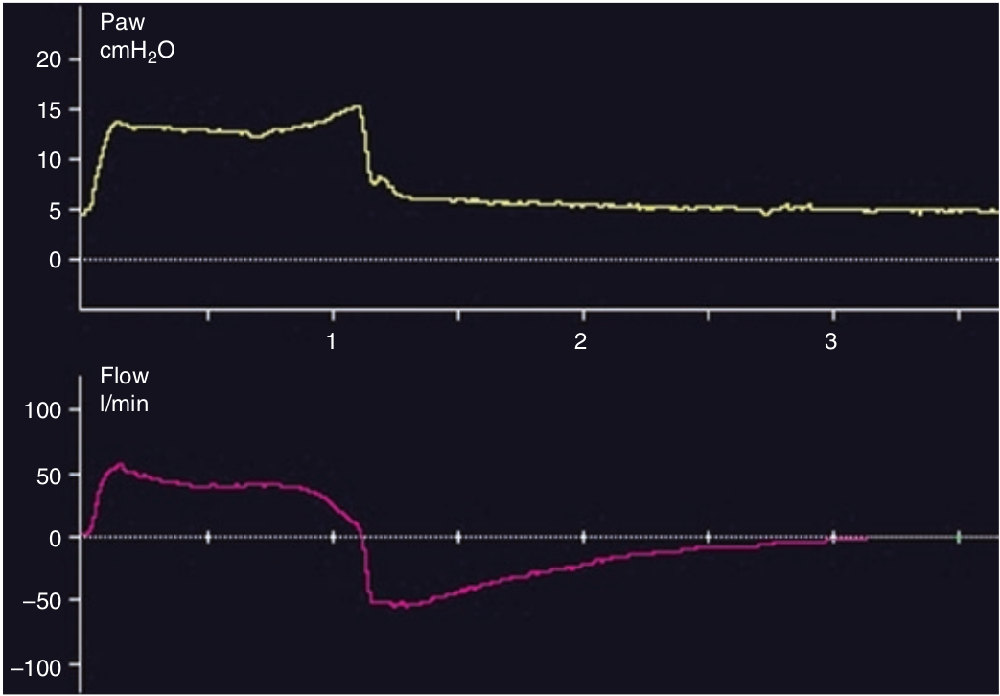

هنگامی می گوئیم سایکل دیررس رخ داده است که تلاش دمی بیمار قبل از رسیدن شدت جریان دمی به آستانه سایکل تمام شود. در حمایت فشاری هنگامی با این پدیده مواجه می شویم که مقدار حساسیت ترایگر بازدمی را خیلی کم قرار داده باشیم. منحنی فشار در انتهای هواگیری ریه ها، مختصری از فشار حمایتی تنظیم شده (PS) بیشتر میشود و بطور همزمان شیب افت شدت جریان دمی نیز بیشتر میشود.

کدام مورد زیر تظاهر سایکل تاخیری نمی باشد؟
۱ - هواگیری طولانی مدت ریه ها
۲ - افزایش فشار راه هوائی در پایان هواگیری ریه ها
۳ - ناراحتی بیمار
۴ - تغییر شیب شدت جریان در پایان دم
۵ - ادامه یک شدت جریان باثبات در پایان دم